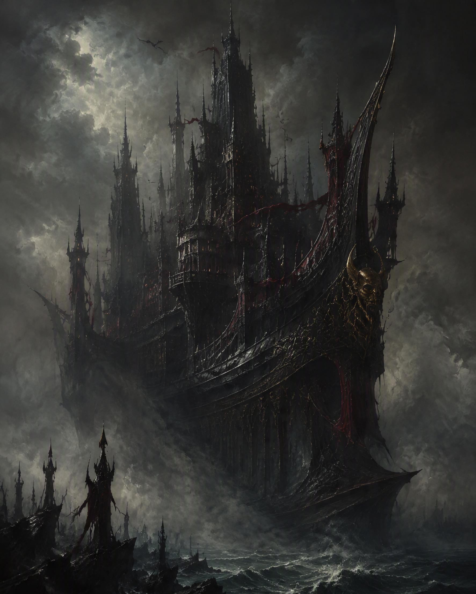
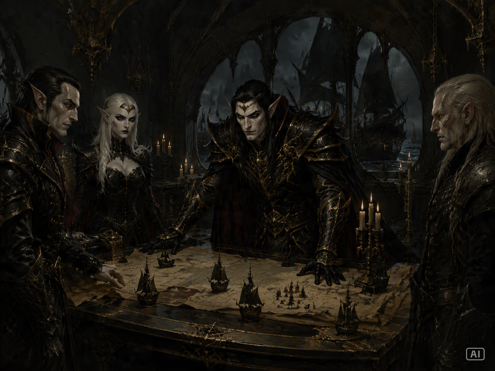
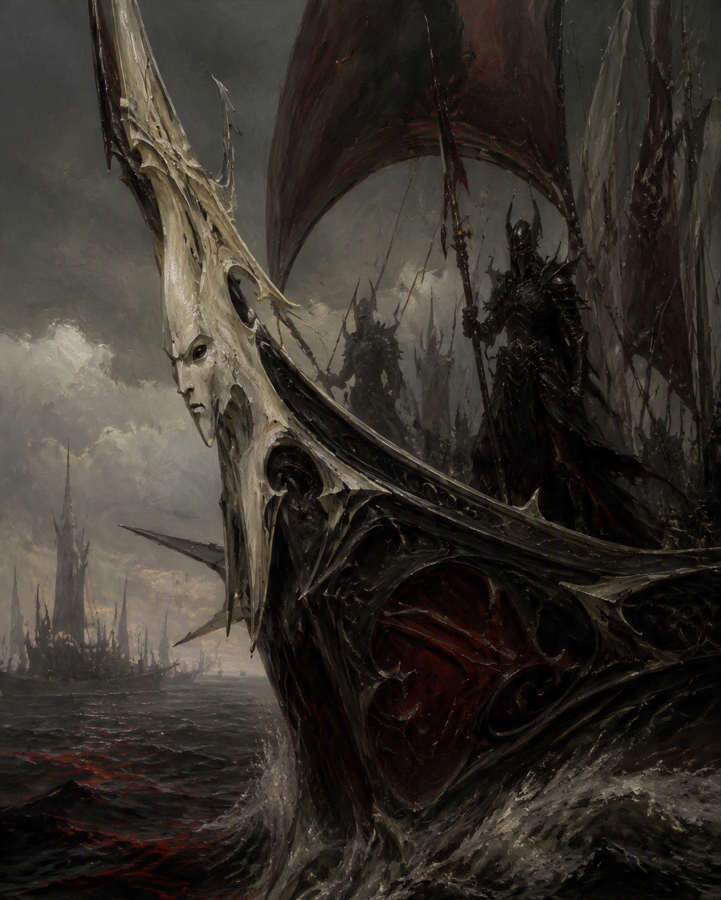
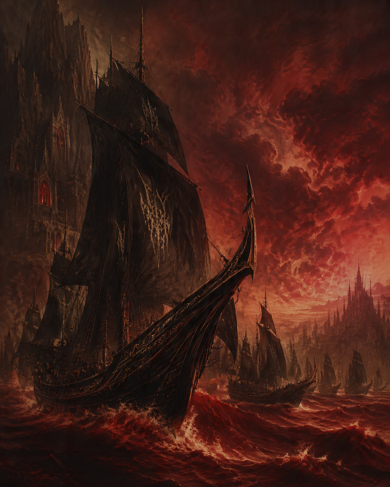
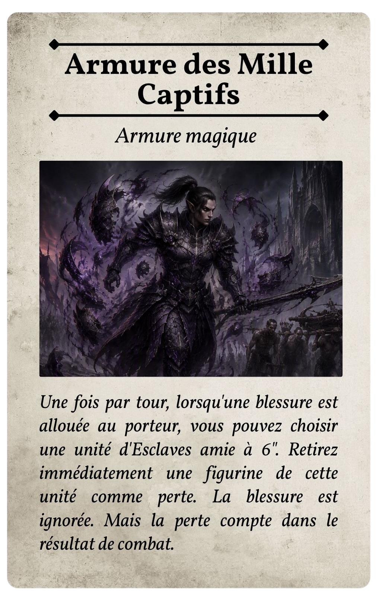

L'âge de l'exil
Les premiers siècles d'une communauté arrachée à son ancienne terre et liée aux flots.
Une Arche Noire. Une flotte en chasse. Et derrière elle, un sillage de ruines, de captifs et de sang.
L'Arche du Sillage Noir est l'une des plus petites Arches Noires à parcourir les mers du Vieux Monde. Sous ses tours, ses remparts et ses ponts hérissés d'armes s'étend une cité flottante où nobles, sorcières, corsaires, esclaves et créatures capturées vivent dans une société organisée autour du raid.

Depuis des siècles, l'Arche parcourt les côtes du Vieux Monde à la recherche de richesses, de captifs et d'occasions de nuire aux royaumes qui s'y sont établis.
Son équipage connaît particulièrement bien les eaux bordant l'Estalie et les routes maritimes qui relient les ports humains.
Le pouvoir appartient au Maître de l'Arche, mais les grandes maisons nobles, les capitaines, les Sorcières et les Maîtres des Bêtes forment un réseau permanent de rivalités et d'alliances.
Nobles, capitaines, sorcières et maîtres des bêtes se disputent le pouvoir tandis que l'Arche poursuit sa route. Le Sillage Noir n'est pas seulement une flotte : c'est une société de rivalités, de dettes et de trahisons.

Une force druchii pensée pour donner une identité propre à l'Arche et à ses équipages, tout en s'intégrant aux règles de Warhammer: The Old World.

Une liste d'Infamie permettant de construire une armée autour des Corsaires, des Esclaves, des Sorcières, des Assassins et des créatures du Sillage Noir.
Le carnage nourrit la flotte : les unités détruites font progresser la Marée et débloquent progressivement des effets cumulatifs.
Volée de traits, Tir dans la mêlée et Magie des Souffrances renforcent l'identité brutale de la flotte.
La chronique de l'Arche traverse plusieurs millénaires avant d'aboutir à l'année 2250 du Calendrier Impérial.

Les premiers siècles d'une communauté arrachée à son ancienne terre et liée aux flots.
Les équipages apprennent à faire de la mer leur territoire et du pillage leur raison d'être.
Les routes du Vieux Monde deviennent les veines d'une économie fondée sur la capture et la violence.
Les rivalités, les dettes de sang et les ambitions de Maldris Dravelyth conduisent l'Arche vers une nouvelle période de conquêtes.
La campagne relie les batailles et donne un poids aux victoires comme aux défaites. Le butin, les actions de préparation et les événements du journal de bord accompagnent la progression de la flotte.
Une entrée en matière pour découvrir les mécaniques de la campagne et préparer la suite.
La flotte frappe la terre ferme et transforme un raid en première étape de la poursuite.
La poursuite prend le large et les forces engagées se retrouvent face aux dangers de la mer.
Le conflit se rapproche de la forteresse flottante du Sillage Noir.
Les navires doivent franchir une route étroite où les mouvements et les obstacles deviennent décisifs.
La richesse d'un port attire les prédateurs et pousse la campagne vers son affrontement final.
Retrouvez le supplément complet, les règles seules et la carte de référence. Les documents restent disponibles gratuitement pour la communauté.

La carte maritime du théâtre d'opérations et des routes empruntées par le Sillage Noir.
Télécharger la carteUnivers, histoire du Sillage Noir, règles, profils, objets, magie, campagne et journal de bord.
↓ Télécharger le supplémentUne version pratique centrée sur les règles nécessaires pour jouer la Flotte du Sillage Noir.
↓ Télécharger les règlesLa Marée de Sang rassemble l'histoire du Sillage Noir, ses personnages, ses forces militaires, ses règles spéciales, sa magie, ses objets et sa campagne narrative.
L'Arche, ses maisons, ses institutions, ses ennemis et ses rivalités.
Composition d'armée, règles spéciales et profils propres à la flotte.
Domaine de l'Agonie, objets magiques, bannières et poisons interdits.
Butin, actions de préparation, scénarios et journal de bord.
Une Arche Noire. Une flotte en chasse. Une chronique qui peut évoluer à chaque bataille.
Retourner aux Archives